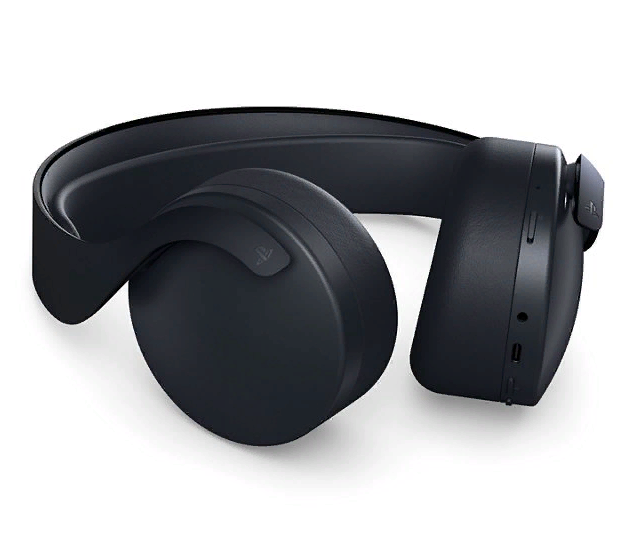
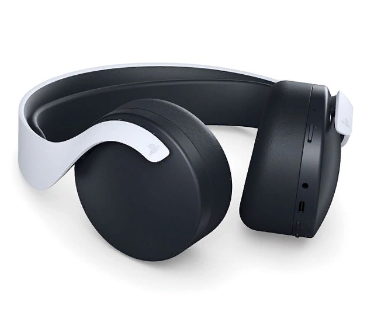

|
|
|
|
Наслаждайтесь безупречным качеством беспроводной связи благодаря гарнитуре, оптимизированной для 3D-звука на консолях PS5. Беспроводная гарнитура PULSE 3D имеет усовершенствованный дизайн и оснащена двумя микрофонами с шумоподавлением, зарядкой через USB Type-C и панелью с удобными элементами управления.
|  |  |
Беспроводная гарнитура PULSE 3D «Черная полночь»Оцените яркие впечатления от ночных игровых сессий со стильной гарнитурой, полностью выполненной в черном цвете. |
Беспроводная гарнитура PULSE 3DИспытайте полное погружение благодаря гарнитуре с двухцветным дизайном, который идеально дополняет консоль PS5. |
Беспроводная гарнитура PULSE 3D специально разработана для воспроизведения 3D-звука, который поддерживается консолями PlayStation 5.
Благодаря технологии Tempest 3D AudioTech на консоли PS5 вы сможете почувствовать себя в центре объемной звуковой сцены, где каждый звук направлен на вас, и пережить невероятный эффект погружения.
Настройте параметры эквалайзера гарнитуры непосредственно в меню PS5 с помощью трех доступных предустановок, а также трех дополнительных слотов для создания собственных.
Играя в видеоигры, не забывайте о стиле: гарнитура оснащена улучшенными мягкими амбушюрами и ремешком головной дужки.
Ваши друзья всегда будут слышать вас в сетевых чатах благодаря двум встроенным микрофонам, оптимально расположенным для четкой записи голоса и улучшенной технологии шумоподавления.
Регулируйте настройки звука во время игры: отключайте звук микрофона, настраивайте общую громкость и громкость звука в игре, регулируйте звук в чате. С помощью специальной кнопки мониторинга микрофона вы сможете легко проверить, как вас слышно вашим друзьям.
Enjoy impeccable wireless quality thanks to a headset optimized for 3D sound on PS5 consoles. The PULSE 3D wireless headset has an advanced design and is equipped with two noise-canceling microphones, USB Type-C charging and a panel with convenient controls.
PULSE 3D "Black Midnight" Wireless HeadsetAppreciate the vivid impressions of the night gaming sessions with a stylish headset, completely made in black. |
PULSE 3D Wireless HeadsetExperience total immersion thanks to a headset with a two-tone design that perfectly complements the PS5 console. |
The PULSE 3D wireless headset is specially designed to play 3D sound, which is supported by PlayStation 5 consoles.
Thanks to Tempest 3D AudioTech technology on the PS5 console, you can feel yourself in the center of a surround sound stage, where every sound is directed at you, and experience an incredible immersive effect.When playing video games, do not forget about the style: the headset is equipped with improved soft ear pads and a headband strap.
Your friends will always hear you in online chats thanks to two built-in microphones optimally positioned for clear voice recording and improved noise reduction technology.
Adjust the sound settings during the game: mute the microphone, adjust the overall volume and volume of the sound in the game, adjust the sound in the chat. With the help of a special microphone monitoring button, you can easily check how your friends can hear you.